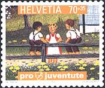
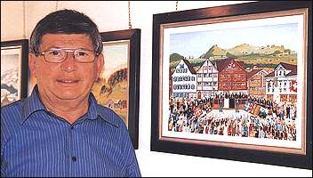
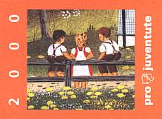

In history Switzerland will have the last word. Victor Hugo.
The Year 2000 Pro Juventute Stamps Set
Since its creation in 1912, the Swiss "Pro Juventute" Foundation has done many useful things for children, adolescent and families in Switzerland. It covers 95% of its costs using its own resources. The funds are used for local and national prevention and consciousness-raising projects, education and leisure activities as well as for the support of children and families in Switzerland. The services offered by this private, independent foundation are constantly changing and developing.
This year the Pro Juventute set displays works of the renown folk artist Albert Manser from Appenzell. Please point to the stamps with the mouse for more information.
 |
 |
 |
 |
Albert Manser was born in 1937, the son of an Appenzell farmer. He loved drawing from the early age, taking his inspiration from the world around him - farm, animals and the landscape. On completing primary school and junior secondary education in a capuchin Order college, he wanted to become an artist but plumped for a safe profession and trained as a confectioner in St. Gallen. He liked his work because he could decorate the goods with tiny pictures, which won him many competitions. Later, when he was working in the Konditorei Spörri in Teufen, his boss - a keen collector of naive painting - encouraged him to paint, and he did so.
 |
 |
In 1962, two years later after marrying Gertrud Schälli from St. Gallen, the family moved to Appenzell. The young Manser occasionally exhibited paintings he has done in the free time and caught the eye of the gallery owner Ida Niggi who urged him to became a professional painter. At that time Alfred Manser was convinced that he could not make enough from painting to support his growing family, but in 1967 he changed his mind and never looked back. Manser is now a famous and internationally acknowledged naive artist.
Source: FOCUS on stamps, 5/2000, a magazine of Swiss Post
Links:
| Revised: 09/05/01. Copyright © 1997 - 2000 by Victor Manta, Switzerland. All rights reserved in all countries. | Click the above image to visit the site |
|